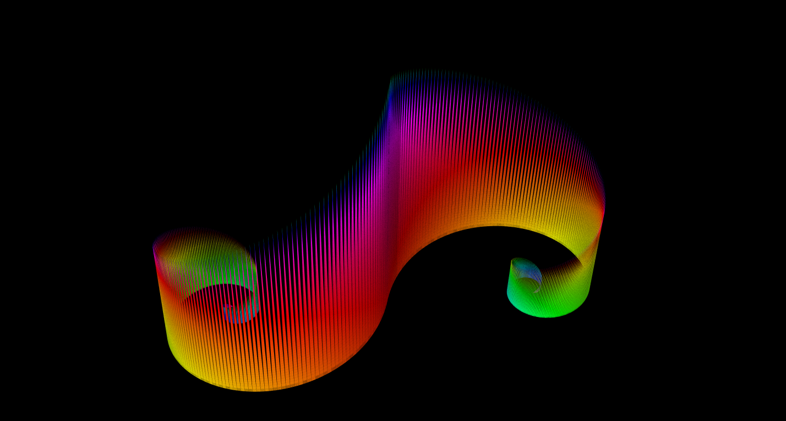
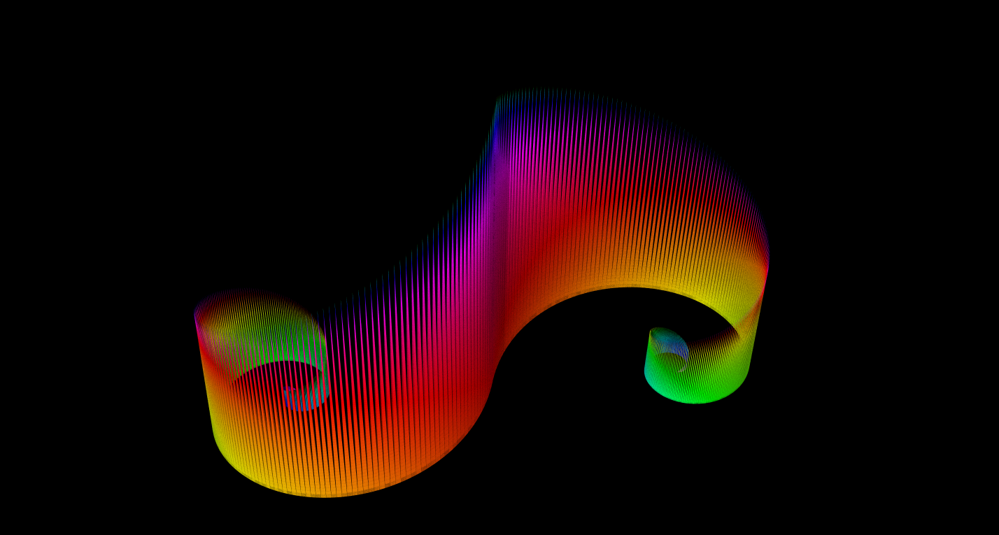

these are all bmp's feel free to download
if you want anything similar made custom, feel free to contact me.


 

most pictures created using structure synth or using custom code and paint.net
some other pictures from projects not on the computer